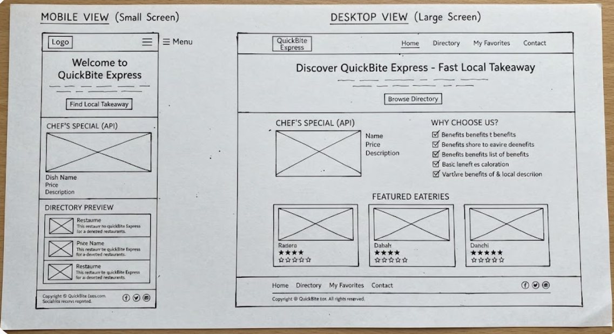

An independent local food ordering and takeaway guide project blueprint.
Site Name: QuickBite Express
Reason: This name represents a fast, reliable, and convenient local food ordering and takeaway guide tailored for busy customers looking for immediate dining solutions.
Optional Domain Availability: quickbite-express.com
The site provides an independent local food ordering and takeaway guide. It features a home page with a dynamic API-driven "Chef's Special" feature, a directory page showcasing a structured and accessible list of independent local eateries, and an interactive tracker page using browser storage APIs to let users build custom favorite meal lists.
Target audience questions driving the website content:
The selected color palette used exclusively across this site plan document:
The font selections applied to this document and upcoming project pages:
'Poppins', sans-serif — Applied to all site titles, headers, and section names for a modern, clean look.'Roboto', sans-serif — Applied to paragraphs, list items, and standard body text for optimal readability.Black and white layout sketches for mobile and desktop viewports of the home page:
Mobile View & Desktop View Wireframes:
